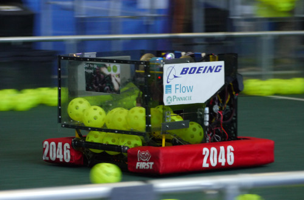
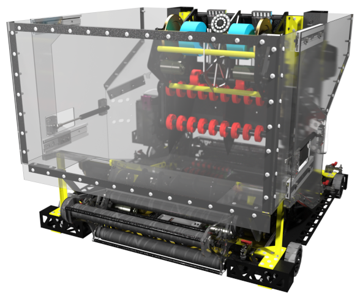
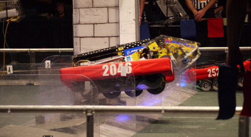
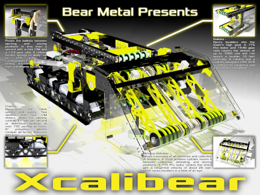
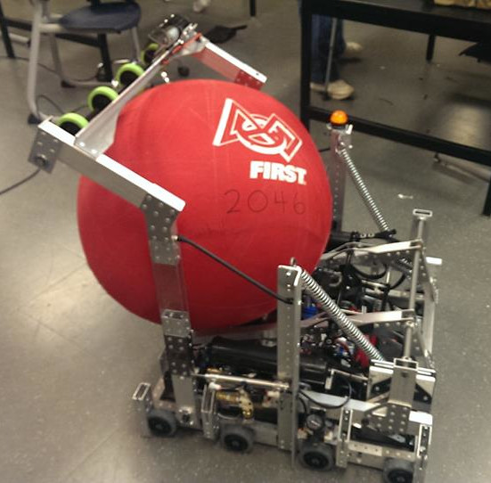
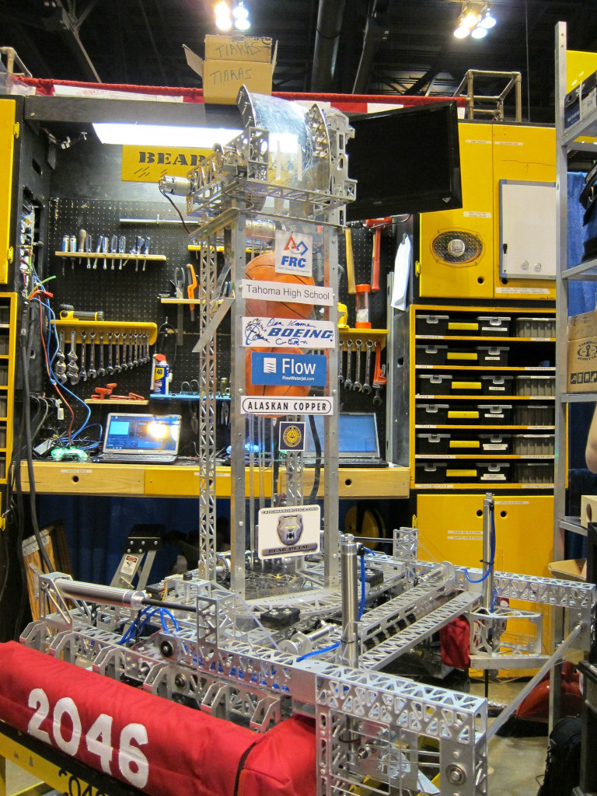

Tahoma Robotics Club
Bear Metal, FRC Team 2046
Design Lead
September 2012 - June 2017 // Maple Valley, WA
Since 2007, Bear Metal has participated in FIRST Robotics Competition. FRC is an engineering sport where teams from around the world are given six weeks to strategize, design, fabricate, assemble, wire, program, and practice a human-sized robot. These robots are then pitted against each other by playing a game that changes every year. My brother joined Bear Metal for their 2009 season. Every chance I got, I would visit their shop and learn how to build robots. In 2012, I was finally old enough, despite being in middle school, to help the high school team.
2017, Hindenbearg: Senior year for me meant this had to be the best robot I’ve designed. Spoiler: it was. Steamworks, a steampunk theme, meant the robot had to collect fuel, wiffle balls, to put them in a boiler then climb onto an airship once the propellers had enough gears to spin up. Our robot's chassis was fast by having the maximum number of high-power motors attached. Both the fuel collector and the gear collector were incredibly effective. The double wide shooter, guided by camera, could propel 10 fuel every second into the 8 feet tall boiler. The climber’s spinning hook side Velcro drum fastened to fibrous rope and lifted the entire robot to reveal my Easter egg: the bottom of the robot was the team’s logo which could only revealed with a successful climb.

At least 2000 parts, from frame members to motors to bolts to electronics to zip ties, were CADed in Autodesk Inventor. 90% of that work was my doing over the first 18 days of build season. Once the design started being fabricated by our in-house CNC mills, I moved to rendering a preview. I spent countless hours adjusting materials, lighting, and settings to achieve the photorealistic render. Except as my worst critic, I see areas for improvement now two years later.

2016, Xcalibear: FIRST decided to make every game themed. 2016 was the first and they picked medieval times. The robots had to scramble over moats, across rubble, and through a portcullis to reach a castle then throw boulders to destroy the tower. Our response had a fitting name: a pun of Excalibur whilst dropping the E to accent that it was our tenth robot. I had initial trouble designing the chassis, but the final version was excellent at traversing any obstacles with its 8 inch pneumatic wheels and dual speed gearboxes.

The collector was fun to design. It articulated up, down, and middle with its triple position pneumatic cylinders. It had a separately articulated set of wheels and conveyor belts which swiftly grabbed any boulder in the vicinity. At the world competition, we figured out how to climb using a telescopic arm and a hook. This was another time where we could always climb in practice but rarely could during the matches. This was my first year spending significant time on photorealistic rendering. Albeit my first time, the resulting image turned out better than expected.
2015, Maverick: My first robot as the design lead, also our first powdered coated robot. Coincidence? I think not. This attractive robot played an interesting game that involved stacking totes and filling recycling containers with pool noodles. I did say interesting. I had fun with the chassis, it was our first robot that could drive sideways! By utilizing an H drive, it could precisely position to align with the totes quickly. The lift made Maverick the one of the tallest robots we have made. Plus, with a pneumatic actuated rake that slammed down on the recycling containers, it was our longest robot. In my opinion, the rake (not pictured) made this robot the most dangerous and intimidating machine in our collection.
2014, Bearium: Sort of like volleyball but with exercise balls: Aerial Assist. Our approach resulted in one of our scariest robots, but also so cool. The catapult was my task as the assistant design lead. It had massive springs, winched back by a gearbox with a pneumatic clutch, and adjustable range control using over-centered cams. Its performance was excellent, but the overall robot suffered from its poor collector and intermittent electrical faults. This robot taught me that the electronics need to be designed robustly and have easy access for fault troubleshooting, which I have followed ever since.
Photo by Darren Collins
2013, Bearodactyl: This was an exciting game with an enlightening robot. The goal was to throw frisbees into boxes on the wall and to climb a 10 feet tall pyramid. Our robot’s strategy was to do every task possible in the game. My main contribution was on the climber which gave the robot its name by climbing with claws. I designed various components and after many hours of troubleshooting, it climbed. Check out a video of it working in practice. Somehow successful practice did not result in successful matches. Poor performance in competition taught the team about how the “do all” strategy isn’t always the best.
2012, Bearmageddon: Rebound Rumble, a basketball game with tilting bridges. As this was my first official year, I did the usual first year duties: deburring, sanding, cutting stock, etc. It was a while ago, so I don’t remember exactly what I did; though, I do remember designing part of the robot’s turret and machining out some parts on the CNC mill.
Photo by Tahoma Robotics Club
tags: CAD, manufacturing, mechanical, rendering, robotics, technical drawings